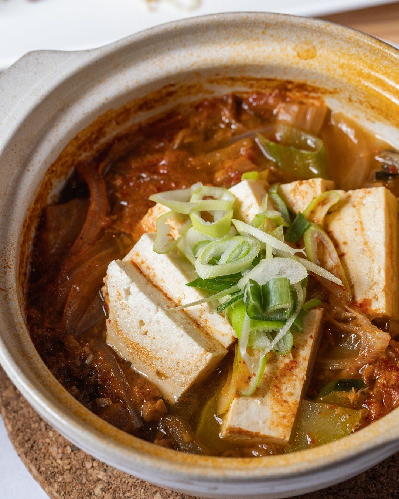
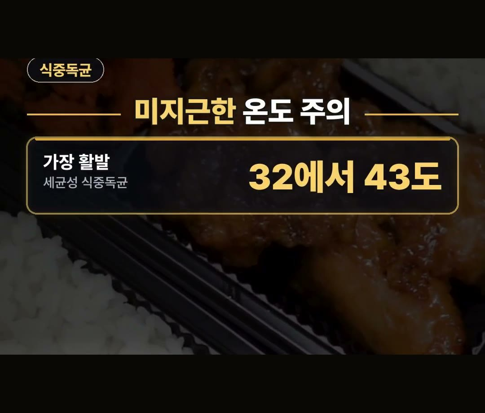
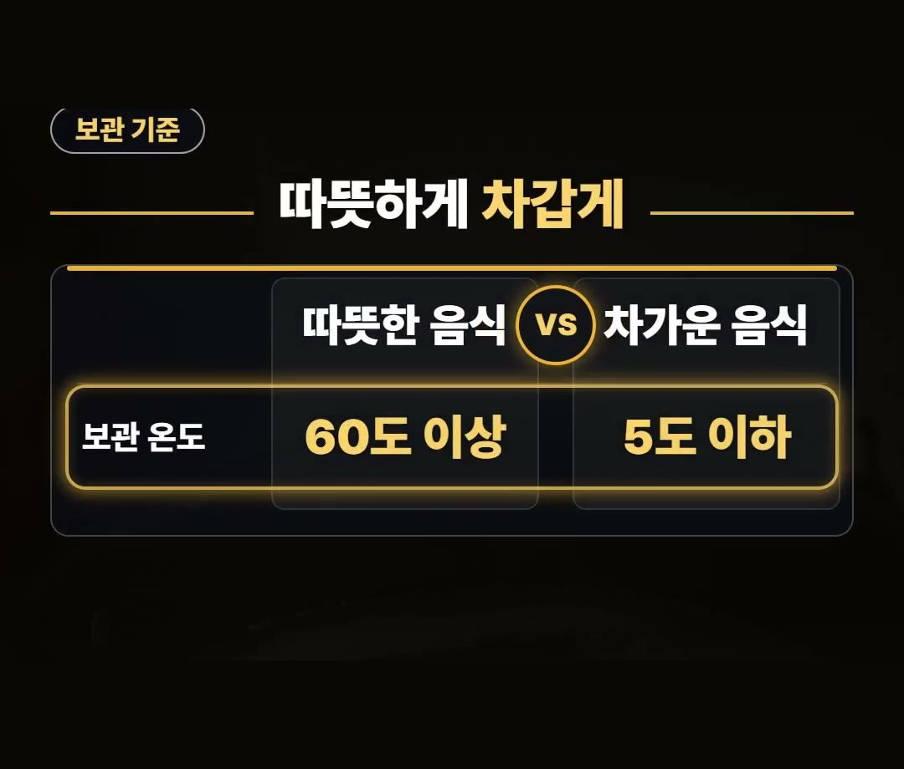
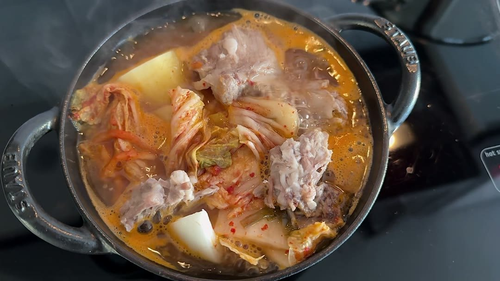

보온 도시락통 추천 전에, 60도 보관 기준과 다들 놓치는 예열 실수
※ 이 글에는 제휴 링크가 포함되어 있으며, 링크를 통해 구매하시면 일정 수수료를 받을 수 있습니다. (가격은 같습니다)
※ 이 포스팅은 쿠팡 파트너스 활동의 일환으로, 이에 따른 일정액의 수수료를 제공받습니다.
※ 이 콘텐츠는 토스쇼핑 쉐어링크 활동의 일환으로, 링크를 통한 구매가 발생하면 일정 수수료를 지급받습니다.
점심시간, 아침에 싸 온 도시락 뚜껑을 열었는데 밥과 국이 미지근하게 식어 있는 상황을 떠올려 보세요.
보온 도시락통 추천을 찾기 전에 그 미지근한 온도가 왜 문제인지, 고를 때 볼 점과 담기 전 예열 순서까지 차례로 정리했어요.
식약처 보관 기준은 따뜻한 음식 60도 이상, 차가운 음식 5도 이하예요.
담기 전에 뜨거운 물로 통을 먼저 데우는 것, 이것 하나는 꼭 기억하세요! 🍱

점심값, 김치찌개 백반 전국 평균 9,080원
먼저 점심값부터 볼게요.
2026년 8월 김치찌개 백반 전국 평균은 9,080원이에요.
지난해 9월보다 3.9% 오른 값입니다.
- 2026년 8월 김치찌개 백반 전국 평균: 9,080원
- 지난해 9월보다: 3.9% 올라
이 값은 2026년 8월 전국 평균이라 지역과 가게마다 다를 수 있어요.
그런데 도시락을 싸더라도 놓치기 쉬운 실수가 있어요.
바로 온도입니다.

미지근한 32에서 43도가 문제예요
세균성 식중독균은 32에서 43도 사이에서 가장 활발하다고 해요.
미지근한 온도가 딱 이 구간입니다.
- 세균성 식중독균이 가장 활발한 온도: 32에서 43도
뜨겁지도 차갑지도 않은 어중간한 온도가 바로 이 구간이라, 도시락은 담은 뒤의 온도까지 신경 써야 해요.

식약처 보관 기준, 따뜻하게 60도 이상
그래서 보온이 중요합니다.
식약처 보관 기준은 이렇습니다.
- 따뜻한 음식: 60도 이상
- 차가운 음식: 5도 이하
따뜻하게 먹을 음식은 따뜻하게, 차갑게 먹을 음식은 차갑게 두고, 그 사이의 어중간한 온도는 피하세요.
앞에서 본 32에서 43도는 이 두 기준 사이에 있는 온도예요.
보온 도시락을 쓸 때는 따뜻한 음식 기준인 60도 이상을 함께 기억해 두세요.

보온 도시락통 추천 전에 볼 3가지
보온 도시락통 추천 글을 보기 전에, 고를 때 볼 점 3가지를 정리했습니다.
- 재질: 스테인리스 재질인지
- 용량: 먹는 양에 맞는 용량인지
- 입구: 씻기 쉬운 입구인지
세 가지 가운데 용량은 사람마다 달라요.
평소 점심에 먹는 양부터 떠올려 보고, 그 양에 맞는 크기를 고르세요.
입구는 씻기 쉬운지가 기준이니, 통 안쪽까지 손이나 솔이 잘 닿는 모양인지 같이 보시면 좋아요.
다들 놓치는 건 예열이에요
보온 도시락에서 다들 놓치는 건 예열이에요.
담는 순서를 정리하면 이렇습니다.
- 1단계: 뜨거운 물로 통을 먼저 데우기
- 2단계: 음식 담기
- 3단계: 2시간 안에 먹기
다들 놓치는 순서라, 뜨거운 물로 통을 먼저 데운 뒤 담는다는 것을 기억해 두세요.
예열은 담기 전에 하는 일이니, 아침에 도시락을 싸는 순서 맨 앞에 넣어 두면 잊지 않아요.
그리고 실온에 두는 도시락은 2시간 안에 드시는 게 좋다고 해요.

316 스테인리스, 300밀리리터 제품도 있어요
참고로 상품 설명에 따르면 316 스테인리스 재질에 300밀리리터 용량인 제품도 있다고 합니다.
고를 때 볼 3가지 가운데 재질과 용량은 이렇게 상품 설명에서 먼저 확인할 수 있으니, 내 점심 양과 맞는지 견줘 보세요.
정리
- 2026년 8월 김치찌개 백반 전국 평균은 9,080원으로 지난해 9월보다 3.9% 올랐어요.
- 세균성 식중독균은 32에서 43도 사이에서 가장 활발하고, 식약처 보관 기준은 따뜻한 음식 60도 이상·차가운 음식 5도 이하예요.
- 보온 도시락통은 스테인리스 재질, 먹는 양에 맞는 용량, 씻기 쉬운 입구를 보고, 담기 전에 뜨거운 물로 예열하세요.
링크는 아래에 모아 두었어요.
📌 2026년 10월 기준 정보예요. 가격은 시기에 따라 달라질 수 있어요.
· 연합뉴스TV 김치찌개 백반 전국 평균(한국소비자원 참가격)
· 서울시 식생활종합지원센터 도시락 식중독 예방(식약처)
· 대한민국 정책브리핑 식중독 예방 보관 온도(식약처)
사진·영상영상 화면: Pexels (Ahimsa - OM, Annushka Ahuja, Ardina Setiorini, Dyon Siregar, IslandHopper X, MART PRODUCTION)
사진: Pexels (Cynthia Ortega Espinosa)